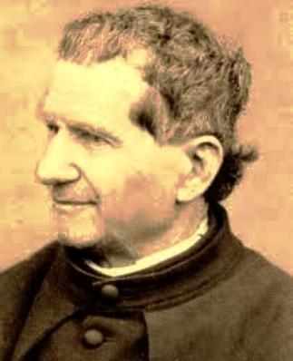
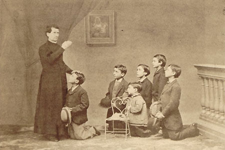
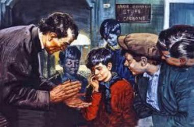
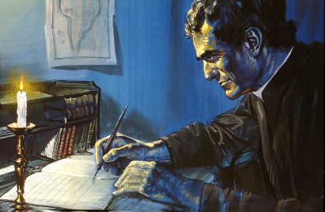
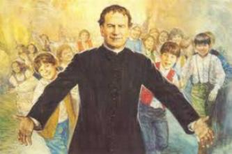

AMOR, CARIDADE E FÉ EM DEUS
MISÉRIA DA PERIFERIA
O “Convitto Ecclesiastico”, isto é, o Colégio de São Francisco, era um ex-Convento junto a Igreja
de São Francisco de Assis. Nele, o teólogo Luís Guala, 
Até então, Dom Bosco conhecia apenas a pobreza dos campos, não sabia ainda, o que é a miséria das periferias das cidades.
Grupos de rapazes vagueavam, sobretudo aos domingos, pelas estradas e ao longo do rio Pó. Contemplam as pessoas que passeia alegres e perfumadas, indiferentes a sua miséria. Eles são filhos de famílias necessitadas, frequentemente desempregadas e que para viver, topam qualquer serviço.
Dom Bosco voltou atordoado das primeiras visitas: os subúrbios eram zonas de fermentação e revolta, um cinturão de desolação. Adolescentes zanzavam pelas ruas desocupados e tristes, prontos para o pior.
Então, raciocinando, chegou rápido a diversas conclusões: “Esses rapazes precisam de Escola e Trabalho que lhes abram um futuro verdadeiramente seguro. Estudando, as oportunidades sempre chegam. Também, precisam de se encontrar com DEUS para descobrir e realizar a sua própria dignidade. Estudando e rezando, encontrará o trabalho necessário e suficiente ao seu viver e ao bem estar da sua vida”.
E a partir desta época, Dom Bosco, que já gostava de lidar com jovens, passou a se preocupar muito mais com eles, a fim de buscar soluções para ajudar a resolver aquele grave problema dos jovens da periferia.
CONTATO COM OS PRISIONEIROS
Padre Cafasso era também muito conhecido nas prisões de Turim, porque dava assistência espiritual aos presos e procurava consolá-los nas tristezas, principalmente com orações no caminho das execuções.
Um dia ao sair para uma daquelas visitas, convidou Padre Bosco a acompanhá-lo.
Os corredores escuros, as paredes negras e úmidas, o aspecto triste e esquálido dos presos perturbaram profundamente o jovem Sacerdote. Teve a sensação de sufoco, de repugnância. Porém, o que mais lhe causava dor, era ver tantos rapazes jovens atrás das grades sem fazer nada, jovens de 12 a 18 anos, sadios, robustos e sem alimento espiritual, foi algo que o encheu de horror.
Voltou outras vezes com o Padre Cafasso e depois voltou sozinho, porque sentia que aqueles jovens necessitavam de urgente ajuda.
Pode assim conhecer a triste história de muitos, as suas humilhações, suas raivas, que às vezes os tornavam ferozes. O delito mais comum que os levavam a prisão era o roubo por causa da fome. Também por inveja dos ricos, que lhes exploravam o trabalho e lhes deixavam na miséria. A sociedade civil nada fizera por eles, mas puniram os seus delitos e os trancafiaram dentro das prisões.
O que mais impressionava Dom Bosco, era que muitos ao sair de lá, estavam decididos a levar uma vida melhor, talvez por medo da prisão. Mas depois de pouco tempo acabavam voltando.
Então Dom Bosco tratou de pesquisar para descobrir a causa, e assim, depois das suas observações viu que eles, os prisioneiros, estavam abandonados a si próprios. Não tinham família ou eram rejeitados pelos parentes e familiares, porque a cadeia os havia desonrado para sempre. Então raciocinou: “Esses rapazes precisariam ter fora da cadeia, um amigo que cuidasse deles, que os assistisse, instruísse e os levasse a Igreja para rezar, para conhecer e ser amigo de DEUS. Assim, com certeza, eles não voltariam à prisão”.
E com esse pensamento, continuou visitando as prisões de Turim e aos poucos, foi se tornando amigo de alguns deles. Mas era uma tarefa difícil com as palavras, e na maioria das vezes, Padre Bosco não conseguia mostrar e elevar aqueles homens a um grau de dignidade, quando voltava à prisão na próxima visita, encontrava tudo como antes, caras amarradas, vozes sarcásticas, blasfêmias, e então, ele não conseguia suportar a sua própria humilhação, e um dia, triste e abatido, derramou lágrimas caudalosas, chorando vencido pela insensatez dos detentos.
Um dos presos perguntou:
- “Porque este Padre está chorando?”
Outro preso com um pouco de discernimento respondeu:
- “Porque nos quer bem. Até a minha mãe choraria se me visse neste lugar”.
UMA DECISÃO IMPORTANTE

Outros Padres de Turim já estavam buscando solução para este problema. Padre João Cocchi fundou no ano de 1841, em Moschino, que era um lugar muito pobre e mal-afamado, no Bairro de Vanchiglia, o primeiro Oratório de Turim e o colocou sob a proteção do Anjo da Guarda.
Dom Bosco, após a experiência traumatizante das prisões, pensou também em fundar um Oratório, mas que não fosse só para fins de semana, mas que proporcionasse assistência diária aos rapazes. Seria um centro onde menores ex-presidiários encontrariam ajuda e amparo.
No dia 8 de Dezembro de 1841, festa solene da IMACULADA CONCEIÇÃO DE NOSSA SENHORA, Padre Bosco estava se paramentando para celebrar a Santa Missa, quando o sacristão José Comotti, vendo um rapazinho que entrou na Sacristia, convidou-o para ser o coroinha. O menino meio envergonhado respondeu que não sabia ajudar na Missa. O sacristão, meio grosseiro, zangou com ele e o expulsou da Sacristia. Mas, quando o rapaz assustado se afastava, Dom Bosco gritou para o sacristão:
- “O que está fazendo? Por que expulsa o menino?”
E o sacristão respondeu:
- “Porque vem à Sacristia e não sabe ajudar na Missa”.
- “Você fez muito mal, por que ele é meu amigo. Vá correndo chamá-lo. Preciso falar com ele”.
O menino voltou muito sem graça. Estava com os cabelos raspados e o paletó sujo de cal. Devia ser um migrante. Os pais devem lhe ter aconselhado, que ele fosse a Missa nos domingos e feriados. Mas ele, não teve coragem de entrar na Igreja com aquela roupa suja, e então, entrou na Sacristia, para aguardar o momento da Missa, como, aliás, faziam muitos homens e meninos em muitas aldeias do interior.
Dom Bosco conversou com ele:
- “Você já assistiu Missa?”
- “Não senhor”.
- “Então vamos assistir? Depois quero falar com você de um assunto de que vai gostar muito”.
Ele prometeu, dizendo que sim. Acabada a Santa Missa, Dom Bosco levou-o até o coro atrás do Altar e com o rosto alegre lhe disse:
- “Meu caro amigo, como se chama?”
- “Bartolomeu Garelli”.
E pela conversa, Padre Bosco ficou sabendo que o rapaz era de Asti, que trabalhava de pedreiro, que tinha 16 anos e os pais tinham morrido, e que não sabia ler e nem escrever. A seguir, ele perguntou a Bartolomeu se já tinha feito a primeira Comunhão?
Ele respondeu que não, e que também nunca se confessou e que não participava do Catecismo por que os outros meninos ficavam gozando dele. Então Dom Bosco perguntou:
- “E se eu lhe desse Catecismo, só para você, aceitaria?”
- “Com muito prazer, contanto que não batam em mim”.
- Fique tranquilo: você é meu amigo e ninguém vai lhe bater. Quando podemos começar?”
- “Quando o senhor quiser”.
- “Pode ser já?”
- “Com prazer”.
Dom Bosco se ajoelhou e rezou uma Ave Maria. Dirá aos salesianos 45 anos mais tarde: “Depois, todas as bênçãos que nos vieram do Céu são frutos daquela primeira Ave Maria rezada com fervor e reta intenção”.
A seguir Padre Bosco fez o sinal da Cruz para começar e viu que o menino não sabia fazê-lo corretamente. Ensinou-o como deve ser feito o Sinal da Cruz. Depois, com a mesma bondade, falando em dialeto regional, pois os dois eram de Asti (Dom Bosco também era de Castelnuovo d’Asti), explicou a Bartolomeu por que nós chamamos DEUS de PAI. E assim, encerrou este primeiro dia de Catecismo dizendo ao rapaz:
- “Gostaria que voltasse no próximo domingo e que trouxesse também os seus amigos”.
- “Com prazer, senhor Padre”.
Bartolomeu Garelli, o pequeno pedreiro de Asti, foi o primeiro embaixador de Dom Bosco junto aos jovens trabalhadores do Bairro. Ele muito feliz e alegre, contou aos companheiros o encontro que teve com um Padre simpático e amigo, e lhes disse que ele também estendia o convite a todos vocês para comparecerem ao nosso próximo encontro.
Quatro dias depois era Domingo. Na Sacristia da Igreja de São Francisco entraram nove rapazes procurando por Dom Bosco. “Desse modo, nasceu o seu almejado Oratório”.
Padre João Bosco e seus primeiros Salesianos ficarão magnetizados pela palavra “já” que significa “pronta intervenção” . É assim que determinaram como providência imediata: dar catequese aos jovens pobres, dar pão, instrução profissional e emprego garantido por um bom contrato de trabalho. Isto porque, os jovens pobres não podem se dar ao luxo de “esperar” pelas reformas e pelos planos do Governo e Administradores. Mas, por certo, em muitos casos só o “já” também não basta: “Se achar alguém morrendo de fome, em vez de lhe dar um peixe, ensina-lhe a pescar” , se dirá com razão. Entretanto, o contrário também está certo: “Se achar alguém morrendo de fome, dê-lhe um peixe, para que ele viva e tenha força de aprender a pescar”.
TODOS GOSTAVAM DELE
No início, quase sempre na Sacristia da Igreja, Dom Bosco começava a instruir os seus rapazes, que alegremente e cheios de interesse procuravam entender as suas palavras. E suas palavras eram um pequeno sermão, só para eles. Um sermão vivo, dialogado, cheio de fatos interessantes. Depois os rapazes sentavam nos bancos da Igreja e participavam da Santa Missa celebrada por ele.
Nos finais de semana e feriados, depois da Santa Missa e do “pãozinho”, os rapazes queriam brincar e disfarçadamente, davam as primeiras corridas ali mesmo, no pátio do Colégio Eclesiástico.
De tarde, quando o tempo permitia, ele levava os rapazes a passeio nas colinas, ao longo dos rios e aos Santuários de NOSSA SENHORA.
Padre Guala e Padre Cafasso confessam os meninos, conversam com eles, além de proporcionar a alguns mais necessitados, recursos para adquirir vestuário, assim como dar pão a outros por várias semanas, até que com o trabalho possam ganhar o próprio sustento.
Padre Bosco continuava visitando as prisões e com simpatia, buscava cativar a amizade daqueles pobres e infelizes rapazes, mostrando-se pronto a recebê-los no Oratório, quando terminasse o tempo de castigo na prisão.
O que mais prendia os meninos a Dom Bosco era a sua bondade cordial e sincera, bondade que se manifestava espontaneamente em gestos concretos e tocantes, colocando-se diariamente em todos os momentos à disposição deles. Assim, se precisasse aprender a ler, a fazer as quatro operações aritméticas, Padre Bosco encontrava o tempo ou as pessoas adequadas para lhes dar aula. Se o patrão é ruim ou os meninos estão desempregados, ele se interessa e avisa os seus amigos para que eles arranjem um emprego, ou um patrão honesto e cristão. Da mesma forma, se a necessidade urgente é dinheiro, todos eles sabem que Dom Bosco está disposto a esvaziar a própria carteira para beneficiá-los. E também, se o dia está difícil, duro de suportar, eles pedem: Padre Bosco, venha falar comigo. E ele vai: entra na oficina, nos canteiros de obras, de onde recebeu o chamado. E vê-lo é sempre reconfortante, por que com ele vem uma imensa paz.
Da mesma maneira, quando era preciso admoestar, a fim de que as coisas continuassem dentro da normalidade, ele também admoestava, com palavras firmes e corretas, sem apelações e distante de todos, para que o rapaz não se sentisse humilhado.
E assim era Padre Bosco com o seu Oratório. E por isso mesmo, sua obra não parava de crescer. Com poucos meses de existência já eram mais de cem rapazes, que precisavam não só de pão e trabalho, mas, sobretudo de fé. Ele escreveu em suas “Memórias”:
- “Era para mim um fato singular, ver durante a semana, especialmente nos dias santos, o meu confessionário rodeado de quarenta ou cinquenta rapazes, esperando muito tempo, para se confessar”.
O ORATÓRIO MIGRA DE LOCAL
No
verão de 1844, os três anos do Colégio Eclesiástico chegavam ao fim. E
naturalmente, com sua partida, Dom Bosco se preocupou com a continuidade 
Padre Cafasso procurou o teólogo Borel, que era diretor espiritual do “Refúgio”, construído pela Marquesa Julia Francisca de Colbert para mulheres que quisessem deixar a rua, na periferia de Valdocco. Vendo que neste local era difícil estabelecer o Oratório de Dom Bosco, conversou com a Marquesa que estava construindo o Pequeno Hospital de Santa Filomena, para meninas doentes e aleijadas. Depois dos entendimentos, a Marquesa concedeu a Dom Bosco a possibilidade de reunir seu Oratório numa faixa de terreno ao lado do Hospital em construção. E assim, logo que fosse possível, ele poderia usar duas salas no interior do prédio do Hospital e instalar a Capela.
Espaço para correr e brincar não faltava. O que faltava mesmo era um lugar silencioso para rezar, confessar e celebrar a Santa Missa. A catequese era administrada no quarto do Padre Borel, teólogo amigo que simpatizou com o projeto do Oratório, e também, no pequeno quarto do Padre Bosco.
Na continuidade, assim que duas salas amplas da construção ficaram prontas, Padre João Bosco levou o seu Oratório para lá e veio ajudá-lo, o Padre Borel, que já era seu amigo. Mas isto por pouco tempo, porque seis meses depois o Hospital ficou pronto e eles tiveram que arrumar outro local para o Oratório.
Na Quaresma de 1845, Padre Tésio tendo que se ausentar da sua Paróquia, recebeu a solicitação e concordou com Dom Bosco, a fim de que ele atendesse a Comunidade Paroquial e o Oratório se instalasse em São Pedro di Víncoli. Mas, aconteceu tanta confusão, que não foi possível continuar. Padre Bosco teve que se movimentar com urgência para arranjar outro local.
No dia 12 de Julho de 1845, Padre Bosco recebeu uma carta da Prefeitura, que por recomendação do senhor Arcebispo de Turim, lhe era concedido utilizar para catecismo dos meninos, a Capela dos Moinhos da Cidade, que ficava na grande Praça Manuel Felisberto, perto da Porta Palazzo (Porta de entrada da cidade), no período do meio dia até as 15 horas, com a proibição dos jovens entrarem no segundo pátio do edifício. Ali se instalaram e começaram as suas atividades. Era um tempo muito curto, mas, ainda era melhor do que não ter nada.
Todavia, logo com pouco tempo, os inquilinos das casas vizinhas ficavam irritados com os cantos, as algazarras e os jogos barulhentos dos meninos, que segundo diziam, lhes tiravam a tranquilidade dominical. E assim, a Padre João Bosco foi dirigida outra carta oficial da Prefeitura, dizendo-lhe que a partir do dia 31 de Dezembro, não seria renovada a concessão. Ele teria de mudar.
Então, até o final do prazo que lhe foi concedido, para evitar outros aborrecimentos, Dom Bosco passou a usar a Capela dos Moinhos somente para a Catequese. Depois, levava os jovens para brincar as margens do Rio Dora, e para rezar, iam a Igreja de NOSSA SENHORA DO PILAR em Sássi, e de NOSSA SENHORA DO CAMPO, onde ele celebrava as Santas Missas e explicava o Evangelho.
Certo dia, na grande Praça, perto dos Moinhos, enquanto distribuía medalhas aos meninos a seu redor, outro menino pequeno de 8 anos de idade, parou a uma pequena distância e ficou olhando, porque embora também quisesse uma medalha, não conseguiria romper a multidão que envolvia Dom Bosco. As medalhas acabaram. Mas percebendo que o menino continuava ali, aproximou-se dele e fez uma brincadeira com as mãos. Como o garoto não conseguia entender, ele sorriu e disse:
- “Nós dois repartiremos tudo.”
Que teria Padre Bosco visto naquele menino? Ele nunca revelou. Todavia, aquele menino cresceu e se tornou o seu braço direito e o seu primeiro sucessor no governo da Congregação Salesiana. Chamava-se Miguel Rua e se afeiçoou de tal modo ao Padre João Bosco, que se tornou seu amigo inseparável.
ESCREVENDO LIVROS

Nenhum deles foi uma obra prima, mas atos de amor por seus jovens, pelo povo simples e pela Igreja.
CHEGOU O INVERNO
Em Novembro de 1845, Padre Bosco já tinha que se movimentar a fim de arranjar outro local para o Oratório, desocupando a Capela dos Moinhos da Cidade, por ordem da Prefeitura. Com a chegada do inverno, o clima também não se prestava mais para passeios. De comum acordo com o Padre Borel, ele alugou três salas amplas no prédio do Padre Moretta, onde passaram quatro meses bem espremidos, mas contentes por poder acolher os meninos, instruí-los e lhes dar comodidade para se confessar.
Dom Bosco recorda este tempo sorrindo, porque foi justamente ali que para divertir os meninos, teve de transgredir os mandamentos que ele mesmo criou como bom propósito de seminarista. Não podendo sair para correr e brincar, os meninos ficavam fechados nos quartos e então, para distraí-los, voltou a fazer mágicas e malabarismo, e agora nunca mais parou. Os meninos adoraram e os resultados foram fabulosos, muito benéficos.
NUVENS NEGRAS
Em Dezembro a saúde do Padre João Bosco decaiu de modo inquietante. As suas atividades eram muitas e variadas: é Capelão no Pequeno Hospital construído pela Marquesa Julia Francisca, onde se abrigam meninas de 3 a 12 anos de idade; está empenhado em visitar e converter os presos nas prisões em Cottolengo; está empenhado nos Institutos de Educação da cidade de Turim; trabalha em seu Oratório; dá aulas noturnas; visita os meninos no próprio local de trabalho, e o inverno é anunciado como bem rigoroso.
Os pulmões dele demonstram, nesses meses frios, preocupante fragilidade. O teólogo Padre Borel percebe e avisa a Marquesa Barolo, que também muito preocupada, dá a Dom Bosco 100 liras para o Oratório junto com uma “ordem carinhosa, severa e urgente”, dele suspender todas as atividades até o perfeito restabelecimento. Ele obedeceu, cortou todos os compromissos, exceto o dos seus meninos.
A vantagem colhida com este repouso forçado não foi consistente. Mas, a preocupação com a saúde naquele momento era irrelevante, considerando as “nuvens negras” que começavam a formar contra o Oratório. Dom Bosco em suas “Memórias” escreveu com amargura: “Foi nesse tempo que espalharam boatos estranhos, que me chamavam de “Revolucionário”, e outros, que o chamavam de “louco”.
OUTRA VEZ DESPEJADOS
Em Março de 1846, Padre Moretta que alugava três salas onde funcionava o Oratório, chamou o Padre Bosco e lhe disse:
- “Não me leve a mal, mas não posso lhe renovar o aluguel das três salas. Veja as cartas que tenho recebido”.
Era
um punhado de cartas dos inquilinos, que atordoados pela gritaria, reclamavam
contra o barulho dos jovens. E diziam que todos deixariam o prédio se 
Padre Bosco teve ímpetos de revolta: “Será que ninguém podia suportar os rapazes? Será que esses adultos um dia também não foram crianças?”
Não sabia para onde ir. Mas, felizmente estava chegando à primavera. E com ela, pode-se sair de casa, o sol aparece brilhante e por isso, podia-se ficar ao ar livre.
A cinquenta passos, mais ou menos, do prédio onde ele tinha alugado as três salas do Padre Moretta, havia uma área desocupada com um barracão grande no centro. Era o chamado “Campo dos Irmãos Filippi”.
Ele procurou os proprietários e alugou o imóvel. Ali passou a funcionar o Oratório. No barracão ele ministrava a Catequese; no terreno grande ao redor, todos os domingos e feriados, os rapazes se desafogavam em correrias, brincadeiras e disputas. Nesta época já eram mais de trezentos meninos. Num canto, sentando num banco, ele atendia as Confissões.
Por volta das 10 horas da manhã, ao rufar de um tambor militar, os jovens se punham em fila. Depois ressoava a corneta indicando que eles iam caminhar à Igreja da Consolata, ou ao Monte dos Capuchinhos. Ali Padre Bosco celebrava a Santa Missa e rezava com eles, distribuía a Sagrada Comunhão e depois lhes dava um lanche. E com muito amor e dedicação, ele catequizava e instruía todos aqueles jovens.
Entretanto, aqueles terríveis boatos não cessavam e chegando ao conhecimento das autoridades, a policia decidiu intervir no assunto para “Botar ordem na casa”, se fosse o caso. Por isso, os proprietários do terreno com medo, despejaram Dom Bosco e o seu Oratório, dando-lhe quinze dias para desocupar o campo. Mas, antes que acontecesse o “despejo do Oratório”, ocorreram alguns fatos dignos de menção.
TRAMAS E TRAMÓIAS
Como eram mais de trezentos jovens, eles saiam organizadamente do Oratório no Campo Filippi em fila de dois, passavam pela “Porta da cidade”, Porta Palazzo, em direção a Igreja, onde participavam da Santa Missa, Comungavam e depois recebiam um lanche. E tudo comandado ao som de uma corneta e de tambores.
Em face daqueles boatos terríveis que espalharam contra o Padre João Bosco, o Chefe de Policia, que também era o Prefeito da Cidade, Marquês Miguel Cavour, começou a meditar maldosamente e observar os meninos. Viu que não se tratava apenas de crianças, mas rapagões robustos, valentes, que não deixavam de carregar consigo uma inseparável faca. Por essa razão mandou chamar Dom Bosco.
A conversa desde o início descambou para uma situação de mútua oposição, porque o Chefe de Policia, acreditando nos boatos começou a impor condições, dizendo que deveria ser limitado o número de jovens, de evitar que eles entrassem na cidade em filas, como um exército, de excluir os maiores e mais fortes, pois eram considerados mais perigosos. Padre Bosco recusou. Então Cavour levantou a voz:
- “Mas que lhe importa esses vagabundos? Deixe-os em suas casas. Não assuma tais responsabilidades, ou sobrarão dissabores para todos!”
Disse Dom Bosco:
- “Eu dou Catecismo a pobres rapazes, e isso não traz infelicidade a ninguém. Além disso, faço tudo com a permissão do Arcebispo.
Disse o Chefe de Polícia:
- “Ah! O Arcebispo sabe dessas coisas? Ótimo! Eu mesmo falarei com Franzoni, e será ele quem vai acabar com essa sem-vergonhice!”
Padre Bosco se despediu e saiu.
E na verdade, Dom Franzoni não acabou com nada. Antes, defendeu dignamente o Padre João Bosco e sua obra.
Então, a partir daquele dia, os policiais decidiram fazer ronda ao redor do Campo dos Irmãos Filippi.
Por outro lado, aquela expressão “Don Bosco é louco” , se propagou até nos meios religiosos:
- “Será que ele está mesmo ficando louco, de tanta preocupação com os rapazes?”
Diziam alguns:
- “Coitado! Está enlouquecendo! Também não é para menos: com tanto barulho, acabará no manicômio!”
E o assunto chegou ao conhecimento da Cúria Diocesana, que preocupada, mandou um observador para verificar o grau de sanidade do Padre Bosco. A essa altura, dois amigos dele, Padre Vicente Ponzati e Padre Luís Nasi, querendo ajudar, combinaram levá-lo para fazer uma visita médica e um acurado exame no Hospital Psiquiátrico.
Dom Bosco estava numa tarde ensinando catecismo a um grupo de garotos, quando chegou uma carruagem fechada. Desceram dela Padre Ponzati e Padre Nasi, que o convidaram a dar um passeio para descansar e distrair um pouco. Ele, meio desconfiado, respondeu:
- “Pois não! Vou pegar o chapéu e já volto”.
Um dos amigos abriu a porta da carruagem para ele entrar. Ele já desconfiado de alguma cilada, falou:
- “Não, primeiro os senhores”.
E depois de alguma insistência, os dois amigos entraram na carruagem. Então ele fechou bruscamente a portinha e ordenou ao cocheiro:
- “Depressa! Para o manicômio! Os dois estão sendo esperados lá!”
O manicômio, ou hospital psiquiátrico ficava muito perto. Os enfermeiros, avisados, esperavam um Padre, mas quando chegou à carruagem, viram “chegar dois!!!”. Mãos a obra. Voaram encima dos dois. Foi um DEUS nos acuda. Para libertá-los foi um sufoco, pois foi necessária a intervenção do Capelão do manicômio.
A brincadeira foi pesada! Pensando bem, mais pesada da parte de Dom Bosco do que dos amigos dele. Padre Ponzati e Padre Nasi ficaram muito magoados. Anos mais tarde, porém, voltaram a serem amigos novamente.
Mas, a verdade é que, por causa daquela série de boatos maldosos, Padre Bosco foi abandonado por todos os seus colaboradores, gente que ajudava maciçamente o Oratório e as necessidades dos rapazes, os quais ele protegia e amparava com imenso amor e dedicação, e que agora já eram mais de 400 jovens.